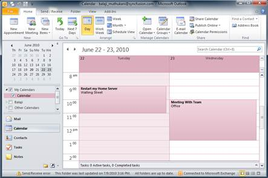
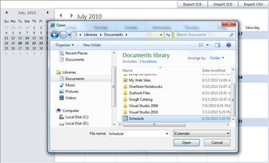
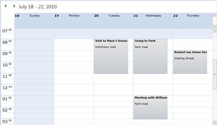

These exported files can then be imported in any other scheduler, such as Microsoft Outlook. Similarly, you can import .ics files from other schedulers.

Figure 70: Importing Exported Files in Other Scheduler (Outlook)
If the imported calendar has already been given a name, it can be imported into the schedule control by using the method ImportICS, which will open a dialog for browsing to the location, as shown below.

Figure 71: ImportICS Dialog Box
Selecting the .ics file will result in adding appointments from the file to the schedule control, as shown below.

Figure 72: Added As Appointments